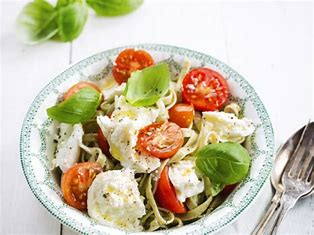

Pasta gremolata met ricotta

Ingredienten
- 400g tagliatelle
- kerstomaatjes 1 bakje
- 400 g tomatenblokjes (in blik)
- parmezaan
- 2 eetlepels olijfolie
- 1 theelepel gedroogde oregano
- basilicum
\
- 1 theelepel gedroogde tijm
- peper en zout
- sjalot
Bereiding
- Kook de tagliatelle beetgaar in kokend gezouten water. Snipper het sjalotje en de knoflook.
- Verhit een pan met olijflolie en fruit de knoflook en sjalot glazig. Voeg er een blok tomatenblokjes aan toen en breng op smaak met gedroogde oregano en gedroogde tijm. Laat 5 minuten op een zacht vuurtje stoven onder deksel.
- Spoel de kerstomaten en halveer ze. Doe ze bij de saus en laat 2 minuten meestoven. Kruid met peper en zout.
- Serveer de tagliatelle met de tomatensaus en wat basilicum. Lekker met vers geraspte parmezaan.